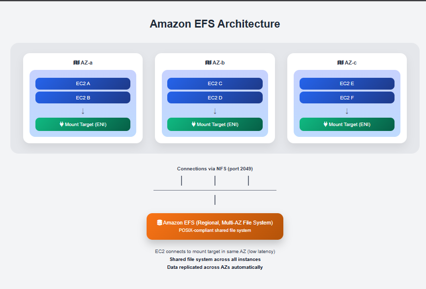

Picture a shared office whiteboard. Anyone in the team can walk up, read what's there, and write something new — all at the same time. There is no "my whiteboard" and "your whiteboard" — it is one shared surface for the whole team.
Now imagine you have 10 EC2 instances all running a web application. Each instance needs to read and write to the same files — configuration, uploaded content, logs. With EBS volumes, you can't do that: an EBS volume is like a personal hard drive — it can only be attached to one EC2 instance at a time (in most cases). You would need to keep copying files around between instances, which is messy, slow, and error-prone.
Amazon EFS (Elastic File System) is a fully managed, scalable NFS (Network File System) that can be mounted by multiple EC2 instances simultaneously — all reading and writing the same files at the same time.

Figure 1: Amazon EFS — multiple EC2 instances sharing the same file system simultaneously
In today's class, after deleting the EFS file system we had created earlier, we looked at what EFS actually is, why it exists, and how to create and use one. EFS is described in the console as "managed file storage for EC2" — but it is much more than that.